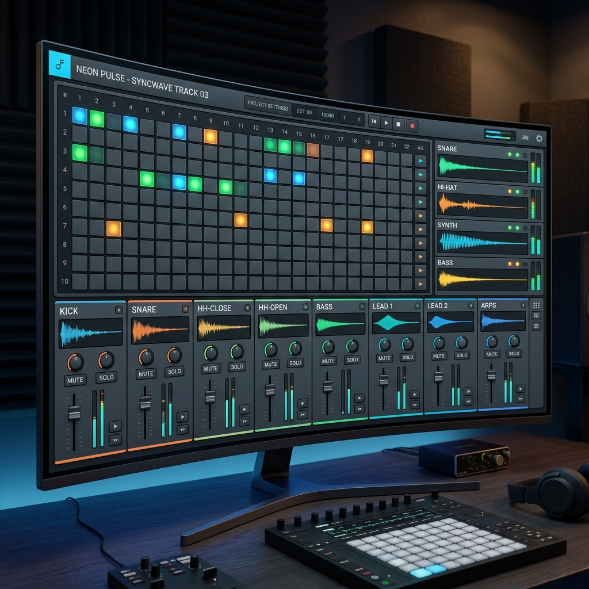
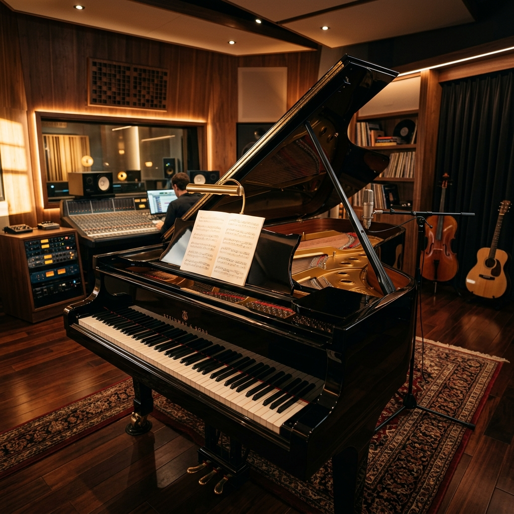
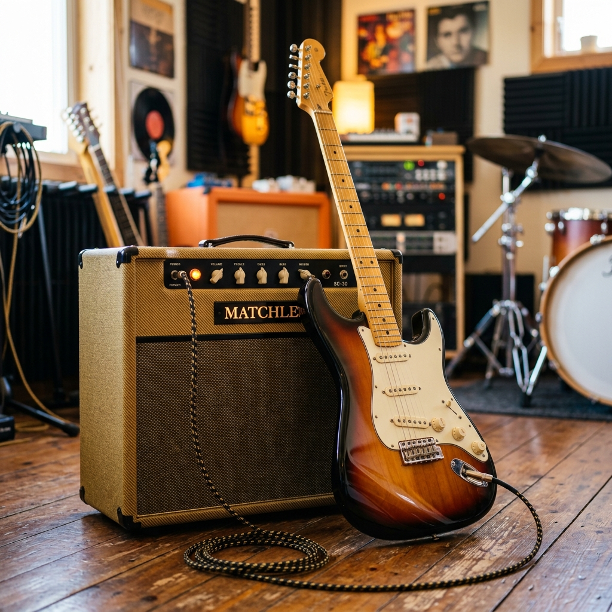
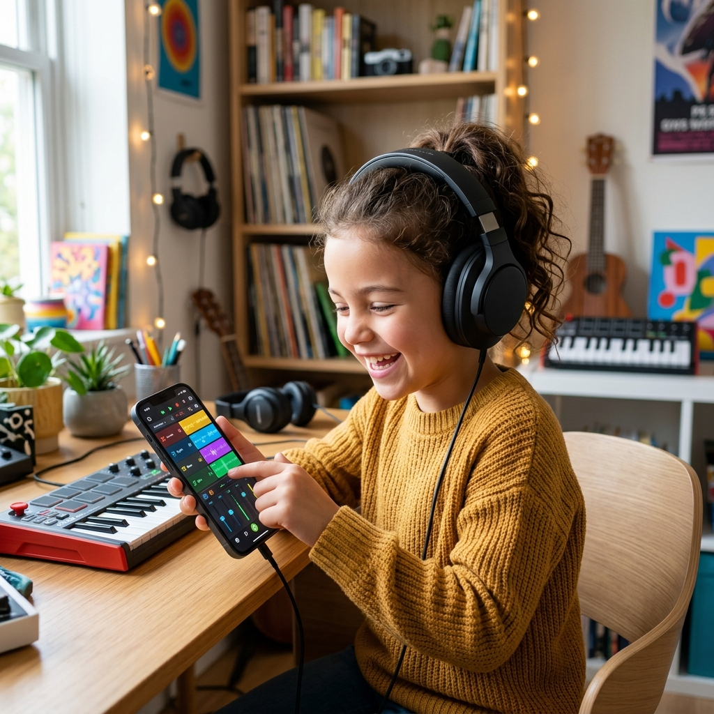

The Ultimate Free AI Music Maker & Beat Generator
Create professional-grade music beats instantly with our state-of-the-art free ai music maker. Compose melodies, craft rhythms, and generate high-quality audio in seconds.

Experience the Power of MusicMakerAI
As the best ai music maker online, we provide a complete studio environment. Our tool gives you access to 12 notes (7 main and 5 flat sharps) across multiple professional instruments including Piano, Guitar, Violin, and a comprehensive Drumset with 12 unique sounds.
Our online music maker combines all the notes you play on the timeline in sequence. Adjust your tempo to craft the perfect tune, play your generated beats, and download the high-quality music file for use in your videos, songs, or any media project.

Piano

Guitar
Violin
Drumset
Passionate About Music Innovation
Our Vision
We are dedicated to the field of music. Built by musicians for musicians. We handle the tech so you can focus on the music. Together, we create masterpieces.
Expert Team
Behind MusicMakerAI is a world-class team of developers and professional musicians collaborating to bring this state-of-the-art ai song maker to life.
Certified Excellence
We hold industry certifications in web development and music production, ensuring you get the best ai music maker experience 24/7.
Professional AI Music Services
AI Music Making
Generate complex melodies and harmonies using our ai music maker free of charge.
Get Started →Advanced Beat Making
The most intuitive beat maker ai for professional producers and hobbyists alike.
Craft Your Beat →Song Track Creation
Use our song maker ai to build foundational tracks for your next big hit.
Build Tracks →Step-by-Step: How to Make Music
Open the Studio
Navigate to our online music maker and start the music engine.
Select Your Instrument
Choose between Piano, Guitar, Violin, or our 12-sound Drumset tab.
Compose your Beat
Place music notes on the timeline, adjust your tempo, and create your unique melody.

🎵 Ready-Made Tunes for Instant Playback
Explore a collection of popular pre-made tunes that you can instantly use in our music maker. Simply copy the notation below and paste it into the app.
Karzz Tune
gf#120, ge150, gf#150, gg120, gf#120, ge150, gf#150, gg120, gf#120, ge150, gf#150, gg150, ge120, ge150, gc150, ge150, gf#150, gd120, gd150, ge150, gf#150, ge150, gf#150, ge120
Nokia Tune
pb230, pa230, pc#100, pd#100, pb230, pa230, pc#100, pd#100, pf#230, pe230, pg#100, pb100, pe70
Frequently Asked Questions
Is this really a free ai music maker?
Yes! Our tool is completely free to use with no hidden costs or advertisements. We believe in providing accessible music creation tools for everyone.
Can I use the beats I create for commercial purposes?
Absolutely. When you download your music file, it is yours to use in any project, including YouTube videos, songs, and more.